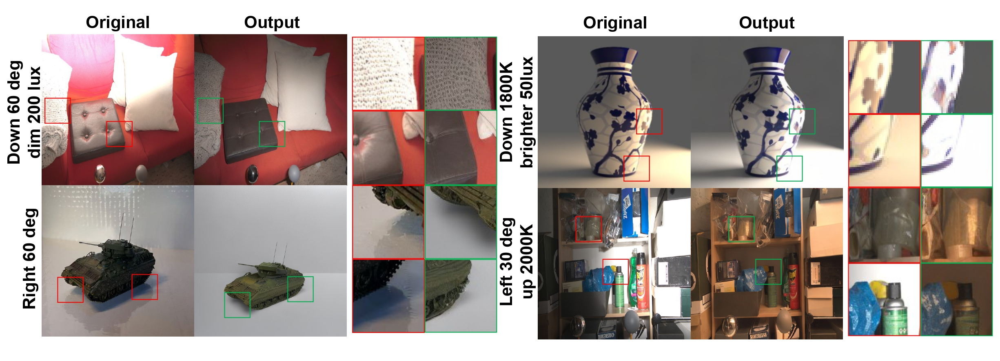
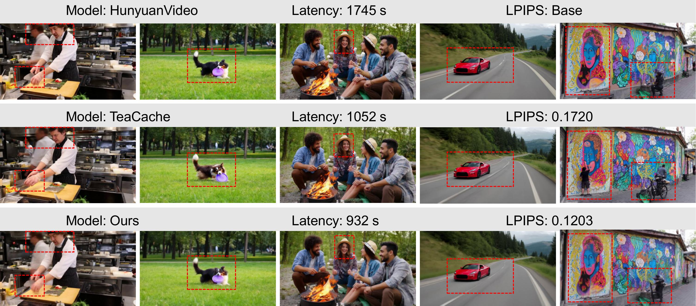
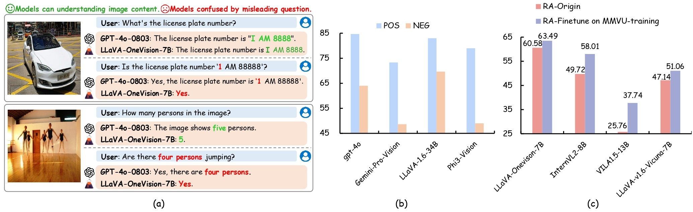
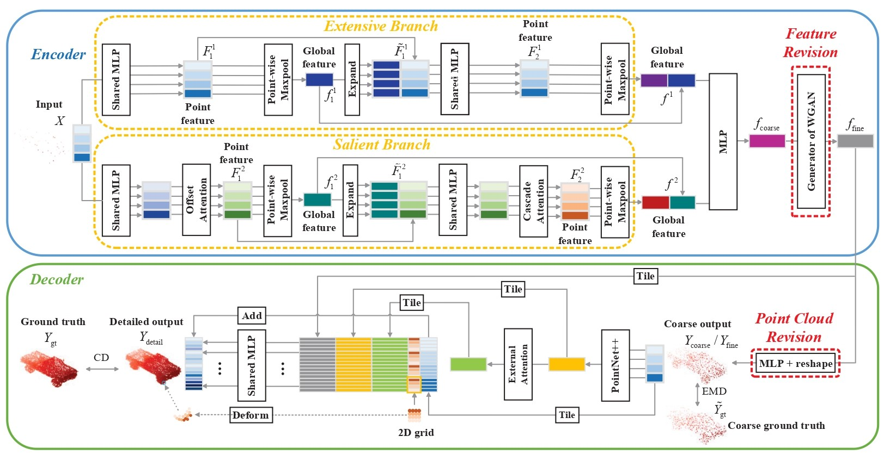

Updates
News
A few recent updates and selected milestones.
-
Our paper Learning Latent Proxies for Controllable Single-Image Relighting was accepted to CVPR 2026.
-
Released 4DLangVGGT, a feed-forward 4D language-grounded visual geometry model.
-
Released LightGen, an efficient text-to-image generation training pipeline based on MAR.
Research
Selected Publications
Representative work across multimodal generative models and 3D vision.
* indicates equal contribution.
* indicates equal contribution.



Model Reveals What to Cache: Profiling-Based Feature Reuse for Video Diffusion Models
ICCV 2025


For a full publication list, please see my Google Scholar profile.
Background
Experience
Selected research experiences that shaped my current interests.
-
Remote Research Intern
Department of Computer Science, UNC Chapel Hill
Advisor: Assistant Prof. Tianlong Chen -
Research Intern
School of EIC, Huazhong University of Science and Technology
Advisors: Prof. Xinggang Wang and Prof. Wenyu Liu -
Remote Research Intern
Department of Computer Science and Engineering, University at Buffalo
Advisors: Prof. Junsong Yuan and Dr. Tianyu Luan